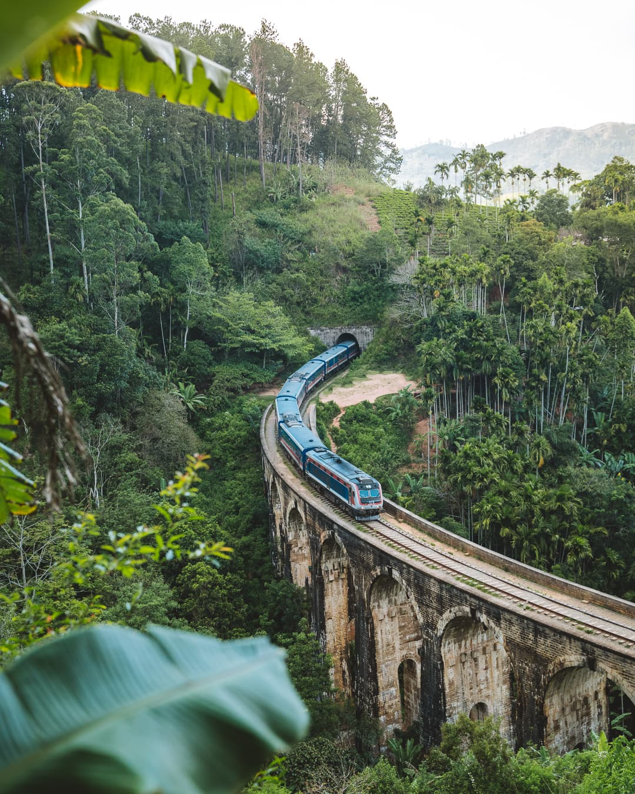

My Travel Stories
Kyoto, Japan
A serene blend of ancient temples, traditional tea houses, and vibrant cherry blossoms.

Highlights:
- Fushimi Inari Shrine hike
- Tea ceremony in Gion
- Arashiyama Bamboo Grove
- Cherry blossom viewing at Maruyama Park
Rome, Italy
A timeless city where history, art, and cuisine come alive around every corner.

Highlights:
- Tour of the Colosseum
- Vatican Museums and Sistine Chapel
- Gelato tasting in Trastevere
- Sunset at the Spanish Steps
Ella, Sri Lanka
A lush hill town surrounded by tea plantations, waterfalls, and breathtaking train rides.
Highlights:
- Hike to Little Adam’s Peak
- Visit Nine Arches Bridge
- Ravana Falls adventure
- Scenic train ride to Nuwara Eliya